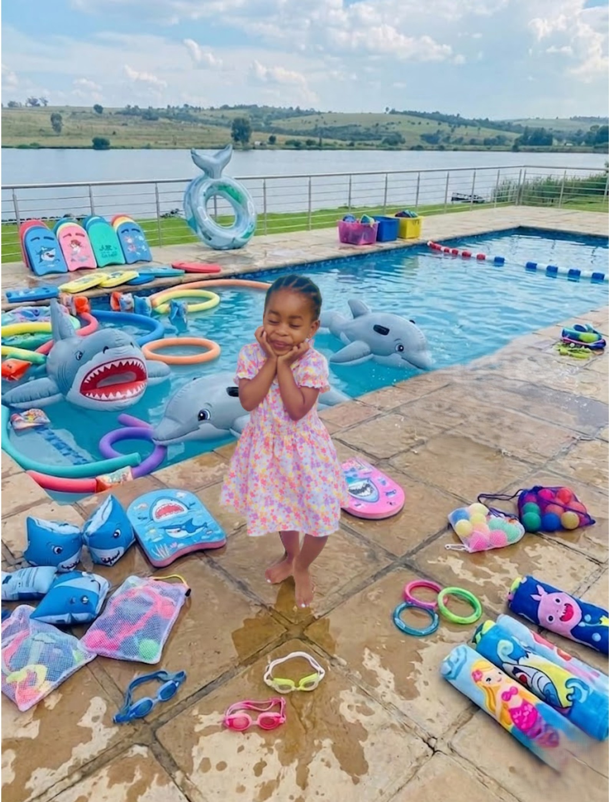
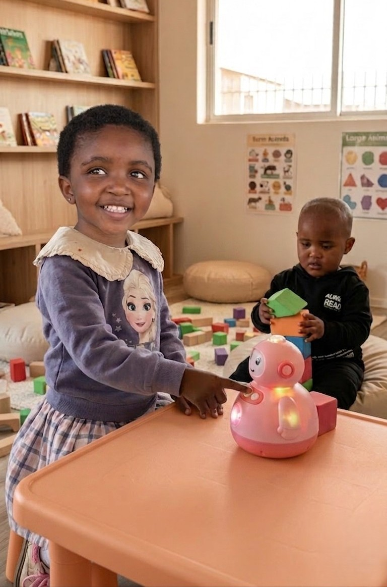

Our Programs
Early Learners
Ages 3–4 Years
Our Early Learners program introduces children to learning through guided play, creativity, movement, and social interaction in a warm and nurturing environment
Children develop:
- Communication skills
- Creativity and imagination
- Social and emotional confidence
- Early motor and coordination skills
- Curiosity through exploration and play
Through our Tiny Worlds approach, children are encouraged to learn, discover, and grow at their own pace while building a strong foundation for future learning.
Pre-Kindergarten
Ages 4–5 Years
Our Pre-Kindergarten program encourages independence, confidence, and early problem-solving through engaging, hands-on experiences.
Children are introduced to:
- Early literacy and numeracy
- Creative thinking
- Teamwork and collaboration
- Language and communication development
- Structured play-based learning
This stage helps children strengthen their confidence and prepares them for more advanced learning experiences
Kindergarten Prep
Ages 5–6 Years
Kindergarten Prep focuses on preparing children for a confident transition into primary school through balanced academic, creative, and social development.
Children develop:
- Early reading and writing readiness
- Foundational mathematics skills
- Critical thinking and problem-solving
- Responsibility and independence
- Confidence in structured learning environments
Our approach ensures children feel emotionally, socially, and academically prepared for their next educational journey.
Enrichment Classes
At Akari Academy, we believe early childhood is a season of wonder, discovery, and gentle
growth. Our
curriculum is thoughtfully designed around immersive learning environments called Tiny Worlds,
carefully curated experiences that help children aged 3–6 explore creativity, confidence, communication,
movement, and emotional development through purposeful play.
Every Tiny World introduces children to new ideas in a warm, nurturing, and age-appropriate way while
encouraging independence, curiosity, and joy in learning.
Melody World:
Melody World introduces children to the beauty of music through singing,
rhythm games, instruments, movement, and sound exploration.
Children learn to express themselves
creatively while developing listening skills, memory, coordination, and confidence.
Activities may include:
Singing circles and nursery melodies
Rhythm and clapping exercises
Introduction to percussion instruments
Musical storytelling
Movement and dance through music
Sound recognition and auditory play
This program supports emotional expression, language development, creativity, and social interaction in
a joyful and engaging environment.

Aqua World:
Aqua World introduces children to water in a safe, playful, and
confidence-building environment. Through guided swimming and water activities, children develop
coordination, strength, water awareness, and basic safety understanding while learning to feel
comfortable and confident in the water.
Activities may include:
Water confidence exercises
Beginner swimming movements
Floating and kicking techniques
Guided splash and play activities
Water safety awareness
Coordination and balance development
Fun group water games
Supports physical development, coordination, confidence, water safety awareness, and social teamwork
through calm, guided early swimming experiences.
Language World:
Language World nurtures communication skills by exposing children to multiple
languages
in natural, playful ways.
Through songs, storytelling, greetings, games, and conversation, children
begin developing confidence in language and appreciation for different cultures.
Children are introduced to:
Early vocabulary building
Conversational confidence
African and international language exposure
Storytelling and listening activities
Phonics and speech development
Cultural songs, greetings, and traditions
This program helps strengthen communication, social confidence, memory, and global awareness from an
early age.
Creative World:
Creative World gives children the freedom to explore their imagination
through hands-on
artistic experiences. Children learn that creativity has no limits while developing fine motor skills,
confidence, and independent thinking.
Activities may include:
Painting and drawing
Clay and sensory art
Craft creation
Colour exploration
Creative storytelling
Design and imaginative play
Children are encouraged to express themselves freely while building confidence in their unique ideas and
abilities

Discovery World:
Discovery World is designed to spark curiosity and introduce foundational
scientific thinking through play-based exploration. Children engage in sensory activities and simple
experiments that encourage questioning, observing, and problem-solving.
Experiences may include:
Water and texture play
Building and construction activities
Nature experiments
Counting and sorting games
Shape and pattern recognition
Simple STEM challenges
This program develops cognitive growth, critical thinking, sensory awareness, and confidence in
exploring the world around them.
Nature World:
Nature World reconnects children with the outdoors through guided exploration
and nature-inspired learning experiences. Children learn to appreciate the environment while building
physical confidence and curiosity.
Activities may include:
Gardening and planting
Outdoor sensory walks
Nature observation
Water and sand exploration
Animal and insect discovery
Seasonal learning activities
This program encourages mindfulness, environmental awareness, independence, and healthy physical
activity in a calm and natural setting.
Values World:
Values World focuses on emotional growth, positive relationships, and gentle
moral guidance.
Through stories, discussions, and role-play, children are taught important values
that help shape compassionate and respectful individuals.
Children learn about:
Kindness and empathy
Respect and honesty
Gratitude and sharing
Emotional understanding
Positive friendships
Foundational faith-based principles and storytelling
The goal is to help children develop confidence, emotional intelligence, and a strong sense of care for
themselves and others.
Movement World:
Movement World supports healthy physical growth through energetic, playful
movement activities designed for young learners.
Children improve balance, coordination, strength,
and
body awareness while having fun in an active environment.
Activities may include:
Dance and creative movement
Obstacle courses
Stretching and balance exercises
Coordination games
Ball skills and active play
Rhythm-based movement sessions
This program promotes confidence, motor development, teamwork, and overall wellbeing through joyful
physical activity.